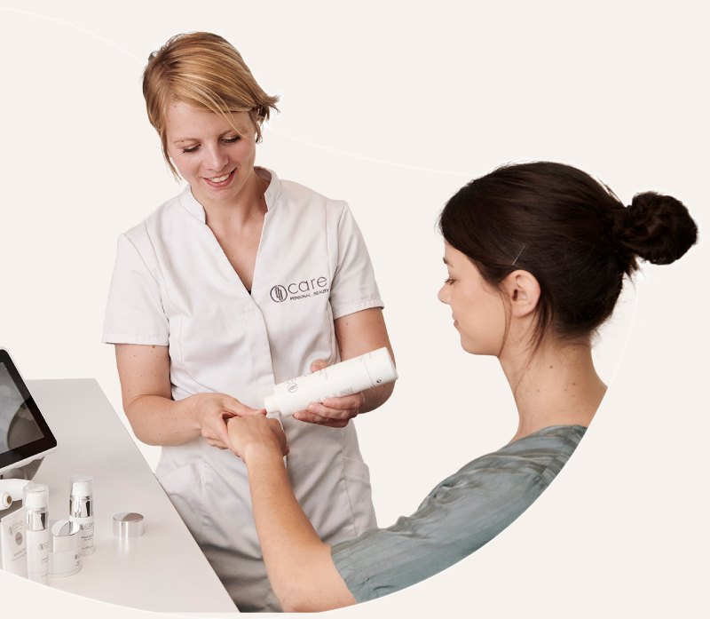

Votre bilan de peau
Un appareil relève 9 mesures de votre visage : hydratation, sébum, sensibilité, fermeté… Nous les décryptons ensemble, avec clarté et précision.
Le bilan en détailInstitut de soin du visage · Herve
Un bilan de peau en 9 mesures, lu avec vous. Selon les résultats, un soin et une routine composés pour votre peau, avec la méthode Care, dans une cabine où l'on prend le temps.
Premier rendez-vous de 2 h à 2 h 30 : bilan, premier soin et routine. Sans engagement.
Comment ça se passe
Un appareil relève 9 mesures de votre visage : hydratation, sébum, sensibilité, fermeté… Nous les décryptons ensemble, avec clarté et précision.
Le bilan en détailD'après vos résultats, nous composons votre soin : doux, précis, sans douleur. Sur mesure, à l'image de votre peau.
Découvrir les soinsQuelques produits Care choisis pour vous, et des gestes simples matin et soir. Quelques semaines plus tard, nous remesurons pour voir les progrès.
Les produits CarePortrait de StéphaniePhoto du shooting à insérer
Qui suis-je
Esthéticienne depuis 20 ans, j'ai choisi de me consacrer au visage et à la méthode Care, qui analyse votre peau avec précision avant de composer chaque soin.
Vos besoins
Chaque préoccupation correspond à une ou plusieurs des 9 mesures. Le bilan dit par où commencer, et le soin suit.
Tiraillements, ridules de déshydratation, teint qui manque de rebond. Souvent une peau qui a soif, plus qu'une peau sèche.
Réserver mon bilanUn ovale moins net, des joues qui s'affaissent, une peau qui perd de sa tonicité. La fermeté se mesure, et elle se travaille séance après séance.
Réserver mon bilanTaches de soleil, d'âge ou d'après-grossesse. Le bilan voit aussi celles qui se préparent sous la peau, avant qu'elles n'apparaissent.
Réserver mon bilanUne peau qui réagit, chauffe ou rougit au moindre changement. Nous adaptons la douceur de chaque geste à votre sensibilité.
Réserver mon bilanUne zone T qui brille dès midi, des pores qui se voient. La mesure du sébum fait la différence entre une peau grasse et une peau déshydratée.
Réserver mon bilanUn visage fatigué, un grain de peau irrégulier, un éclat qui ne revient pas. Souvent plusieurs mesures en cause, que le bilan démêle.
Réserver mon bilanLe concept Care
Le bilan en 9 mesures dresse le portrait précis de votre peau. C'est le point de départ de tout ce qui suit.
Des soins en cabine choisis d'après vos résultats, à un rythme qui vous convient, et remesurés dans le temps.
Des produits Care sélectionnés pour votre peau, et des gestes simples. Quelques produits suffisent pour commencer.
Des technologies développées selon des normes médicales et des produits formulés par les laboratoires Care. Des résultats qui se voient et se mesurent.
Institut partenaire Care Personal Beauty. Visuels, vidéo et logo de la marque : sous réserve de son accord.

Tarifs
Le prix de chaque soin vous est confirmé avant la séance. Rien n'est ajouté sans votre accord.
Vos questions
Ce que l'on nous demande le plus souvent. Toutes les questions sur le bilan
Oui, et c'est ce qui fait la différence. Le bilan nous dit ce dont votre peau a besoin, et le premier soin se fait dans la foulée, lors du même rendez-vous.
De 2 h à 2 h 30 : le bilan, sa lecture ensemble, votre premier soin et vos conseils de routine. Un vrai moment pour vous.
Non. Le bilan se fait par contact léger et les soins sont doux et non invasifs. Vous repartez sans marque et reprenez votre journée normalement.
Non. Nous vous conseillons une routine d'après votre bilan, et vous choisissez librement. Les produits Care sont en vente à l'institut uniquement.
Rue Moreau 20C à Herve, au sein de l'institut La Beauté d'Alys. Notre cabine y a sa propre enseigne, Le Soin par Stéphanie : entrez et demandez-nous à l'accueil.
Rue Moreau 20C
4650 Herve
Notre cabine se trouve au sein de l'institut La Beauté d'Alys, sous sa propre enseigne : Le Soin par Stéphanie.
Sur rendez-vous uniquement.
Jours et heures à confirmer
Réserver
Laissez-nous vos coordonnées et vos jours préférés. Nous vous rappelons sous 24 h (jours ouvrables) pour fixer votre premier rendez-vous.
Réserver mon bilan de peau Ou appelez le +32 495 79 17 38